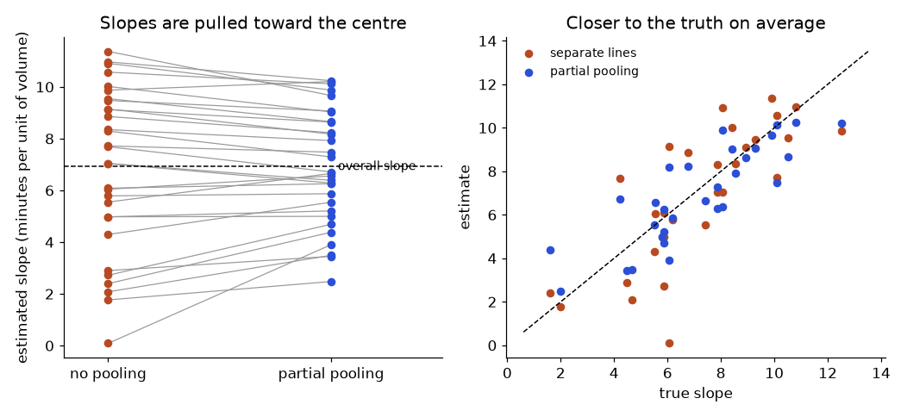
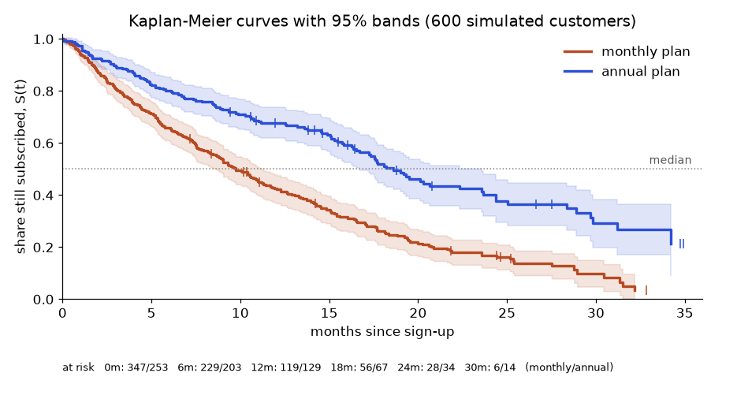

Picture two questions from a real business. First: "How long does a new subscriber stay before cancelling?" Many have not cancelled yet, so their final stay is unknown. Second: "What is the typical delivery time (in minutes) of each of our 200 depots?" Some depots have thousands of deliveries, some only three. A plain average or plain regression gives wrong or over-confident answers for both. Survival analysis solves the first problem and mixed (hierarchical) models solve the second. You will build the main ideas by hand with small numbers, reusing the exponential distribution (Chapter 2) and MLE (Chapter 3). The libraries lifelines and statsmodels are not installed where this chapter was written, so their calls are marked "not run here". Everything else uses numpy and scipy, and every number was computed.
| Word | Plain meaning | Example |
|---|---|---|
| Event | The thing we wait for | Customer cancels, machine breaks down, loan defaults |
| Duration (time) | Time from the start until the event or until we stop watching | 5 months |
| Censored | We stopped watching before the event happened, so we only know "at least this long" | Still subscribed at month 12 |
| Survival function S(t) | Probability that the event has NOT happened by time t | S(6) = 0.46 |
| Hazard h(t) | Risk of the event in the next instant, given you survived until t | 9% per month |
Each row of survival data has two columns: time and event (1 = event seen, 0 = censored).
We will use ten subscribers for the whole chapter. Time is in months.
| Customer | 1 | 2 | 3 | 4 | 5 | 6 | 7 | 8 | 9 | 10 |
|---|---|---|---|---|---|---|---|---|---|---|
| time | 2 | 3 | 3 | 5 | 6 | 6 | 8 | 9 | 12 | 12 |
| event | 1 | 1 | 0 | 1 | 1 | 1 | 0 | 1 | 0 | 0 |
Customer 3 (time 3, event 0) was lost at month 3 without cancelling. Customers 9 and 10 are still active at month 12, the end of the study.
Problem 11.1.1 What average stay do you get if you (a) average all ten times as if every customer had cancelled, and (b) average only the customers who cancelled? Why are both wrong?
| Step 1 | All ten times: 2+3+3+5+6+6+8+9+12+12 = 66. Mean = 66 / 10 = 6.6 months. |
|---|---|
| Step 2 | Only the six cancellers (events = 1): times 2, 3, 5, 6, 6, 9, sum = 31. Mean = 31 / 6 = 5.17 months. |
| Answer | (a) is 6.6 and (b) is 5.17. Method (a) treats "still active at month 12" as "left at month 12", so it is too small for the people still active. Method (b) throws away the long stayers, so it is biased low. |
| Check | We can verify with code below: t.mean() and t[e==1].mean(). |
| Why it matters | Censoring is the reason ordinary averages and ordinary regression fail on duration data. Dropping censored rows always makes retention look worse than it is. |
import numpy as np
t=np.array([2,3,3,5,6,6,8,9,12,12])
e=np.array([1,1,0,1,1,1,0,1,0,0])
print("mean naive all",t.mean(), "mean events only",t[e==1].mean())Real output:
mean naive all 6.6 mean events only 5.166666666666667Where it is used: churn and customer lifetime (Data Science), time between failures (SRE), time to readmission (Healthcare), model drift time (MLOps).
Check yourself
time and event? Answer: time = 7, event = 0.Look at each time tᵢ where at least one event happened.
nᵢ = number at risk: customers still being watched just before tᵢ (time ≥ tᵢ).dᵢ = number of events at tᵢ.dᵢ / nᵢ.S(t) = product over tᵢ ≤ t of (1 − dᵢ / nᵢ).The name: Kaplan and Meier published this in 1958. The curve is a staircase: flat between events and a step down at each event. Censored customers cause no step, but they shrink nᵢ later, which makes later steps bigger.
Problem 11.2.1 Four customers have (time, event): (2,1), (4,0), (5,1), (7,1). Compute the KM survival curve.
| Formula | S(t) = ∏ (1 − d/n) over event times |
|---|---|
| Step 1 | At t=2: n = 4 at risk, d = 1. Factor = 1 − 1/4 = 0.75. S(2) = 0.75. |
| Step 2 | At t=4: a censoring, not an event, so no step. S stays 0.75. But the customer leaves the risk set. |
| Step 3 | At t=5: at risk = customers with time ≥ 5 → the ones at 5 and 7, so n = 2, d = 1. Factor = 0.5. S(5) = 0.75 × 0.5 = 0.375. |
| Step 4 | At t=7: n = 1, d = 1. Factor = 0. S(7) = 0. |
| Answer | S = 0.75 after month 2, 0.375 after month 5, 0 after month 7. |
| Check | If we wrongly treated the censored customer as an event at t=4, we would get S(4) = 0.75 × (1 − 1/3) = 0.5 and S(5) = 0.5 × (1 − 1/2) = 0.25. The correct answer 0.375 is higher, as it should be, because we do not know that customer left. |
| Why it matters | The same arithmetic, just with bigger tables, is what KaplanMeierFitter in lifelines does. |
Problem 11.2.2 Compute the KM table for the ten-customer running example.
S=1.0
print("time n_risk d q S")
for u in sorted(set(t[e==1])):
n=(t>=u).sum(); d=((t==u)&(e==1)).sum()
S*=1-d/n
print(u,n,d,round(d/n,4),round(S,4))Predict first: what is S after month 6? Real output:
time n_risk d q S
2 10 1 0.1 0.9
3 9 1 0.1111 0.8
5 7 1 0.1429 0.6857
6 6 2 0.3333 0.4571
9 3 1 0.3333 0.3048t>=u counts everyone still watched at time u. At month 3 there is one event and one censoring; the censored customer leaves the risk set, so at month 5 it is 7, not 8.In lifelines the same result is (not run here):
from lifelines import KaplanMeierFitter
kmf = KaplanMeierFitter()
kmf.fit(durations=t, event_observed=e)
print(kmf.median_survival_time_)Where it is used: retention curves by cohort (Data Analytics), comparing churn of two plans (Data Science), hours until half of a disk fleet fails (Reliability), time to first purchase where non-buyers are censored (Marketing).
Check yourself
If the hazard is a constant λ (for example 9% per month), then the time to the event follows the exponential distribution from Chapter 2, and S(t) = e^(−λt). With censoring, the MLE (Chapter 3 idea) is simple:
λ̂ = (number of events) / (total time everyone was observed)
The bottom is called exposure: all months watched, from events and censored people alike. The median survival is ln(2) / λ̂.
Problem 11.3.1 Using the ten customers: 6 events and 66 total months of exposure. Estimate λ and the median.
| Formula | λ̂ = events / exposure; median = ln 2 / λ̂ |
|---|---|
| Plug in | λ̂ = 6 / 66 |
| Compute | λ̂ = 0.0909 per month. Median = 0.6931 / 0.0909 = 7.62 months. Approximate standard error λ̂ / √events = 0.0909 / 2.449 = 0.0371. |
| Answer | About 9.1% of active customers cancel each month. The model says half are gone by month 7.6. |
| Check | KM said median 6 months; the exponential model says 7.6. They differ because ten points are very few, and a constant hazard may not be true. Always compare a parametric model with KM. |
| Why it matters | Events divided by exposure is the same idea as breakdowns per million machine-hours; censored time counts in the denominator. |
Real output:
events 6 exposure 66 rate 0.09090909090909091 median 7.624618986159398
se rate 0.037113480951260276Suppose the first five customers are on a monthly plan (group A) and the last five on an annual plan (group B). The log-rank test asks: if the two groups had the same hazard, how many events would we expect in group A at each event time, given who is at risk? At each event time with n at risk (nA in A), d events: expected events in A is d × nA / n. Add up expected events, compare with observed events, and divide the squared gap by the sum of variances. The result follows a chi-square distribution (Chapter 2) with 1 degree of freedom.
Group A is times 2,3,3,5,6 (events 1,1,0,1,1). Group B is times 6,8,9,12,12 (events 1,0,1,0,0). At every event time we compute EA = d*nA/n and a variance d*(nA/n)*(nB/n)*(n-d)/(n-1). The table from that loop:
logrank table: time nA nB d dA EA var
2 5 5 1 1 0.5 0.25
3 4 5 1 1 0.4444 0.2469
5 2 5 1 1 0.2857 0.2041
6 1 5 2 1 0.3333 0.2222
9 0 3 1 0 0.0 0.0
O 4 E 1.5634920634920635 V 0.923217435122197 chi2 6.430306338268405 p 0.011218922741739133Problem 11.3.2 Read the table. What does it say?
| Step 1 | Group A had 4 observed cancellations (O = 4). |
|---|---|
| Step 2 | If A and B had the same risk, we would expect only E = 0.5 + 0.444 + 0.286 + 0.333 + 0 = 1.563 in A. |
| Step 3 | Test statistic = (4 − 1.563)² / 0.923 = 5.936 / 0.923 = 6.43. |
| Answer | The p-value is 0.011. Monthly-plan customers cancelled earlier than annual-plan customers more than chance explains, in this tiny toy sample. |
| Why it matters | In practice you call lifelines.statistics.logrank_test (not run here), but it is only "observed versus expected events at each event time". |
KM and log-rank handle one grouping variable. Real questions have many: plan type, country, age, number of support tickets. Cox regression (David Cox, 1972) models the hazard like this:
h(t | x) = h₀(t) × exp(β₁x₁ + β₂x₂ + ...)
h₀(t) is the baseline hazard: an unknown curve shared by everyone. Cox's trick is that you never need to estimate it.exp(β) is the hazard ratio (HR): the factor by which the hazard is multiplied when x goes up by 1. HR = 1 means no effect. HR = 0.5 means half the leaving speed.How is β found? At each event time, ask: "Given that exactly one customer in the risk set fails now, how likely is it to be the one who did?" That is exp(β·xᵢ) / sum over risk set of exp(β·xⱼ). Multiplying over event times gives the partial likelihood, which we maximise (the MLE idea of Chapter 3).
Problem 11.3.3 Fit a Cox model with one binary variable x = 1 for the annual plan, using our ten customers.
from scipy.optimize import minimize
def nll(b): # negative log partial likelihood
ll=0
for i in np.where(E==1)[0]:
R=T>=T[i] # risk set at this event time
ll+=b*G[i]-np.log(np.exp(b*G[R]).sum())
return -ll
r=minimize(lambda z:nll(z[0]),[0.0])
b=r.x[0]; print("beta",r.x,"HR",np.exp(r.x))
h=1e-4; se=1/np.sqrt((nll(b+h)-2*nll(b)+nll(b-h))/h**2) # curvature of the loglik
print("se",se,"ci",np.exp(b-1.96*se),np.exp(b+1.96*se),"loglik",-r.fun,-nll(0.0))T, E, G are times, events and group codes (0 = monthly, 1 = annual). Real output:
beta [-2.39196532] HR [0.09144978]
se 1.1539892590234444 ci 0.009525486613028183 0.8779669083001508 loglik -8.334197210954885 -11.127851046509797β̂ = −2.392.exp(coef) as "this feature multiplies the leaving speed by this factor" is the whole skill.Note: our loop uses Breslow handling of tied event times; lifelines uses Efron by default, so its numbers can differ slightly. With 10 customers, do not trust the effect size.
With lifelines (not run here):
from lifelines import CoxPHFitter
cph = CoxPHFitter()
cph.fit(df, duration_col="time", event_col="event") # df has time, event, plan_annual, ...
cph.print_summary() # shows coef, exp(coef)=HR, CI, p
cph.check_assumptions(df) # tests proportional hazardsApplications: churn drivers with confidence intervals (Data Science), effect of firmware on time to failure (Reliability), time to default (Finance), survival forests that predict a whole curve per customer (Machine Learning, same data format).
Check yourself
For observation j in group g:
y_gj = μ + a_g + ε_gj, with a_g ~ Normal(0, τ²) and ε_gj ~ Normal(0, σ²)
μ is the overall mean (a fixed effect: one number you want to know).a_g is the group's own deviation (a random effect: you do not care about each exactly, you model them as draws from a population of groups).τ² = variance between groups. σ² = variance inside groups (noise).τ² / (τ² + σ²): the share of total variance that belongs to groups. It also equals the correlation between two measurements from the same group.Given known τ², σ², the best estimate for group g with n observations and sample mean ȳ is
estimate = w × ȳ + (1 − w) × μ, where w = τ² / (τ² + σ²/n)
w is the weight on the group's own data. It goes to 1 for large n and towards 0 for small n. This formula comes from Bayes thinking in Chapter 1 and the Math PDF: a prior (the population of groups) combined with data.
Problem 11.4.1 Three depots with mean delivery times: A has n = 1, ȳ = 400 min. B has n = 4, ȳ = 300. C has n = 25, ȳ = 220. Suppose μ = 250, τ² = 400, σ² = 900. Compute the partially pooled estimates.
| Formula | w = τ² / (τ² + σ²/n); estimate = μ + w (ȳ − μ) |
|---|---|
| Plug in | (A) w = 400 / (400 + 900/1) = 400 / 1300 = 0.3077. (B) w = 400 / (400 + 225) = 0.64. (C) w = 400 / (400 + 36) = 0.9174. |
| Compute | (A) 250 + 0.3077 × 150 = 296.15. (B) 250 + 0.64 × 50 = 282.0. (C) 250 + 0.9174 × (−30) = 222.48. |
| Answer | A's single 400-minute delivery is pulled hard, to 296 min. B is pulled a little, to 282. C, with 25 observations, hardly moves (220 to 222.5). |
| Check | Each estimate lies between ȳ and μ, and the one with more data stays closer to its own mean. ICC = 400 / 1300 = 0.31. |
| Why it matters | Without shrinkage, the "slowest depot" list is dominated by depots with few deliveries. This is a classic ranking error (also seen in "best-rated restaurant with one 5-star review"). |
Usually μ, τ², σ² are unknown. A mixed model estimates them by maximum likelihood (or REML, a version that corrects a small-sample bias in the variance estimates). This means choosing numbers to maximise the probability of seeing your data (Chapter 3). Below we do this by hand with scipy.optimize. The data is simulated: 8 endpoints with 3 to 60 measurements each, true values μ = 250, τ = 30, σ = 40.
from scipy.optimize import minimize
rng=np.random.default_rng(7)
ns=[3,5,5,8,10,20,40,60]
true=rng.normal(250,30,8) # true group means (tau = 30)
data={g:rng.normal(true[g],40,ns[g]) for g in range(8)} # sigma = 40
def nll(p): # negative log-likelihood, random-intercept model
mu,lt,ls=p; tau2=np.exp(lt); sig2=np.exp(ls); ll=0
for v in data.values():
v=np.array(v); n=len(v); ybar=v.mean(); ssq=((v-ybar)**2).sum()
logdet=(n-1)*np.log(sig2)+np.log(sig2+n*tau2)
quad=ssq/sig2+n*(ybar-mu)**2/(sig2+n*tau2)
ll+=-0.5*(n*np.log(2*np.pi)+logdet+quad)
return -ll
r=minimize(nll,[250,np.log(500),np.log(500)],method='Nelder-Mead')
mu,tau2,sig2=r.x[0],np.exp(r.x[1]),np.exp(r.x[2])
print("mu",mu,"tau",np.sqrt(tau2),"sig",np.sqrt(sig2),"icc",tau2/(tau2+sig2))
print("g n true_mean nopool pool w err_nopool err_pool")
en=[];ep=[]
for g,v in data.items():
w=tau2/(tau2+sig2/len(v)); pool=mu+w*(v.mean()-mu)
en.append(v.mean()-true[g]); ep.append(pool-true[g])
if g in (0,2,5,7): print(g,len(v),round(true[g],1),round(v.mean(),1),round(pool,1),round(w,3),round(abs(en[-1]),1),round(abs(ep[-1]),1))
print("(rows 1, 3, 4, 6 omitted here)")
print("rmse nopool",np.sqrt(np.mean(np.square(en))),"rmse pool",np.sqrt(np.mean(np.square(ep))))Each group has covariance σ²I + τ²J (J = matrix of ones); we optimise log-variances so variances stay positive. data maps group to its list of measurements (simulated with seed 7). Real output:
mu 235.42360650224833 tau 27.111764766589932 sig 34.74153480227205 icc 0.37849611266801203
g n true_mean nopool pool w err_nopool err_pool
0 3 250.0 241.7 239.5 0.646 8.3 10.5
2 5 241.8 187.1 199.0 0.753 54.7 42.7
5 20 220.3 227.9 228.4 0.924 7.6 8.2
7 60 290.2 282.8 281.5 0.973 7.4 8.7
(rows 1, 3, 4, 6 omitted here)
rmse nopool 21.855767120709817 rmse pool 17.655586280690347Problem 11.4.2 Interpret the output.
| Step 1 | The model recovered τ ≈ 27.1 (true 30), σ ≈ 34.7 (true 40), ICC ≈ 0.38. |
|---|---|
| Step 2 | Group 2 (n = 5): raw mean 187.1, true 241.8, pooled 199.0, so the error falls from 54.7 to 42.7. |
| Step 3 | Overall RMSE falls from 21.9 (no pooling) to 17.7 (partial pooling). |
| Answer | Partial pooling made the estimates better on average, mostly by helping small groups. It does not help every group: groups 0, 1, 5, 6 and 7 got slightly worse. Gains are on average, not guaranteed for each group. |
| Check | The weights increase with n (0.646 at n = 3, 0.973 at n = 60), as the formula says. |
| Why it matters | One seed and 8 groups is a demonstration, not a proof; the gain is an average effect. |
With statsmodels (not run here, standard usage):
import statsmodels.formula.api as smf
m = smf.mixedlm("delivery_min ~ 1", df, groups=df["depot"]).fit()
print(m.summary()) # shows the fixed intercept, the group variance and the residual varianceApplications: fair ranking of stores or depots (Data Analytics), A/B tests across many countries and repeated measures per user (Data Science), target encoding of high-cardinality columns, which is partial pooling in disguise (Machine Learning), user and item biases in recommenders.
Check yourself
A random intercept says "each depot has its own starting level". A random slope adds "each depot also reacts differently to order volume". Each group gets its own line, shrunk toward the average line: y = (μ + a_g) + (β + b_g) × volume + ε. In statsmodels: smf.mixedlm("delivery_min ~ load", df, groups=df["depot"], re_formula="~load") (not run here). Ignore for now: crossed random effects, non-normal outcomes (generalized linear mixed models, which join Chapter 8's GLMs with random effects), Bayesian hierarchical models (Chapter 9 priors do the shrinking), and survival "frailty" models. "Mixed", "multilevel", "hierarchical" and "random-effects" model all name the same family.
Section 11.4 built the random-intercept model. Here we add the next three ideas that appear in real analyses: random slopes, the cost of ignoring clusters (the design effect), and cluster-robust standard errors as the cheap alternative. Everything is run with numpy and scipy, so the numbers are real; statsmodels is not installed here.
The model for depot g, delivery j: y = (β₀ + ag) + (β₁ + bg) × volume + ε, where (ag, bg) are drawn from a two-dimensional normal with standard deviations τa and τb and a correlation. Within a depot the covariance of the 12 observations is V = Z D Zᵀ + σ² I, with Z the design matrix [1, volume] and D the 2×2 covariance of (a, b). We maximise the likelihood over β, D and σ.
Problem 11.6.1 Simulate 30 depots with 12 deliveries each. True values: intercept 200, slope 8, SD of intercepts 20, SD of slopes 3, residual SD 15. Fit the random-slope model by maximum likelihood and compare slope estimates from separate lines with the partially pooled ones.
import numpy as np
from scipy.optimize import minimize
rng = np.random.default_rng(31)
G, m = 30, 12 # 30 depots, 12 observations each
true_a = rng.normal(0, 20, G) # random intercept deviations (SD 20)
true_b = rng.normal(0, 3, G) # random slope deviations (SD 3)
vol = [rng.uniform(0, 10, m) for _ in range(G)] # order volume
y = [200 + true_a[g] + (8 + true_b[g]) * vol[g] + rng.normal(0, 15, m) for g in range(G)]
def nll(p):
b0, b1, l1, l2, z, ls = p
s1, s2, sig2 = np.exp(l1), np.exp(l2), np.exp(2 * ls)
r = np.tanh(z)
D = np.array([[s1**2, r * s1 * s2], [r * s1 * s2, s2**2]])
ll = 0
for g in range(G):
Z = np.column_stack([np.ones(m), vol[g]])
V = Z @ D @ Z.T + sig2 * np.eye(m)
res = y[g] - (b0 + b1 * vol[g])
sign, logdet = np.linalg.slogdet(V)
ll += -0.5 * (m * np.log(2 * np.pi) + logdet + res @ np.linalg.solve(V, res))
return -ll
r = minimize(nll, [200, 8, np.log(15), np.log(2), 0.0, np.log(15)], method="Nelder-Mead",
options={"maxiter": 4000, "xatol": 1e-4, "fatol": 1e-6})
b0, b1, l1, l2, z, ls = r.x
print("fixed intercept, slope :", round(b0, 1), round(b1, 2))
print("SD intercept, SD slope :", round(np.exp(l1), 1), round(np.exp(l2), 2), "(true 20 and 3)")
print("residual SD :", round(np.exp(ls), 1), "(true 15)")
# shrunken (best linear unbiased) group lines vs separate OLS lines
s1, s2, sig2 = np.exp(l1), np.exp(l2), np.exp(2 * ls); rho = np.tanh(z)
D = np.array([[s1**2, rho * s1 * s2], [rho * s1 * s2, s2**2]])
raw, pooled = [], []
for g in range(G):
Z = np.column_stack([np.ones(m), vol[g]])
ols = np.linalg.lstsq(Z, y[g], rcond=None)[0]
V = Z @ D @ Z.T + sig2 * np.eye(m)
u = D @ Z.T @ np.linalg.solve(V, y[g] - Z @ np.array([b0, b1]))
raw.append(ols[1]); pooled.append(b1 + u[1])
raw, pooled = np.array(raw), np.array(pooled)
true_slopes = 8 + true_b
print("slope RMSE, separate OLS lines :", round(np.sqrt(np.mean((raw - true_slopes) ** 2)), 2))
print("slope RMSE, partial pooling :", round(np.sqrt(np.mean((pooled - true_slopes) ** 2)), 2))
print("spread of slopes: raw SD", round(raw.std(), 2), " shrunk SD", round(pooled.std(), 2))fixed intercept, slope : 201.3 6.91
SD intercept, SD slope : 19.4 2.57 (true 20 and 3)
residual SD : 16.6 (true 15)
slope RMSE, separate OLS lines : 1.97
slope RMSE, partial pooling : 1.39
spread of slopes: raw SD 3.09 shrunk SD 2.18| Step 1 | The fixed effects are 201.3 and 6.91 (true 200 and 8). With only 30 depots, the average slope has real uncertainty. |
|---|---|
| Step 2 | The estimated SD of the random intercept is 19.4 (true 20), of the random slope 2.57 (true 3), and the residual SD is 16.6 (true 15). The variance parts are recovered roughly, as expected for 30 groups. |
| Step 3 | For each depot compute the best linear unbiased prediction of its slope, which is β₁ plus the predicted deviation bg. This is the shrunken slope. |
| Step 4 | The RMSE of the slope falls from 1.97 (separate lines) to 1.39 (partial pooling). The spread of slopes shrinks from SD 3.09 (raw) to 2.18 (shrunk), which is the shrinkage. |
| Answer | Partial pooling gives better slope estimates on average. The raw slopes are too spread out because they contain noise as well as real differences. |

How to read it: On the left, long lines are depots whose own slope looked extreme; their blue dots end near the middle. On the right, a perfect estimate would sit on the dashed diagonal. The blue dots are closer to it than the orange ones overall, although a few individual depots get slightly worse.
Suppose m rows come from each cluster (user, depot, store) and the intraclass correlation is ρ (the ICC from 11.4). The variance of an overall mean is inflated by the design effect:
Rows inside a cluster partly repeat each other, so 1,000 rows from 20 users carry far less information than 1,000 independent rows.
Problem 11.6.2 20 users each load the page 50 times. The ICC is 0.3. Compare the naive standard error of the mean, the cluster-aware one (treat each user's mean as one data point), and the truth found by repeating the whole study 2,000 times.
import numpy as np
rng = np.random.default_rng(5)
users, m = 20, 50 # 20 users, 50 page loads each
icc_true = 0.3
sd_between, sd_within = np.sqrt(0.3), np.sqrt(0.7) # total variance 1
ybar_runs = []
for _ in range(2000): # how variable is the overall mean, really?
u = rng.normal(0, sd_between, users)
y = u[:, None] + rng.normal(0, sd_within, (users, m))
ybar_runs.append(y.mean())
true_se = np.std(ybar_runs)
u = rng.normal(0, sd_between, users); y = u[:, None] + rng.normal(0, sd_within, (users, m))
naive_se = y.std(ddof=1) / np.sqrt(users * m) # pretends 1000 independent rows
cluster_se = y.mean(axis=1).std(ddof=1) / np.sqrt(users) # treats each user as one unit
deff = 1 + (m - 1) * icc_true
print("true SD of the overall mean (2000 repeats):", round(true_se, 4))
print("naive SE (1000 rows independent) :", round(naive_se, 4))
print("cluster SE (20 user means) :", round(cluster_se, 4))
print("design effect 1+(m-1)ICC :", round(deff, 2))
print("effective sample size 1000/deff :", round(users * m / deff, 1))
print("naive SE x sqrt(deff) :", round(naive_se * np.sqrt(deff), 4))true SD of the overall mean (2000 repeats): 0.1259
naive SE (1000 rows independent) : 0.0329
cluster SE (20 user means) : 0.1391
design effect 1+(m-1)ICC : 15.7
effective sample size 1000/deff : 63.7
naive SE x sqrt(deff) : 0.1304| Step 1 | Design effect: 1 + 49 × 0.3 = 15.7. The 1,000 rows are worth about 1,000 / 15.7 = 63.7 independent rows. |
|---|---|
| Step 2 | The true SD of the overall mean, from 2,000 repeats of the study, is 0.1259. |
| Step 3 | The naive SE, which treats 1,000 rows as independent, is 0.0329, about four times too small. A 95% interval from it would be about four times too narrow. |
| Step 4 | The cluster SE, built from the 20 user means, is 0.1391, close to the truth. The naive SE times √deff is 0.1304, also close. |
| Answer | When rows are clustered, the cluster is the real sample size. Either use the cluster means, multiply the naive SE by √deff, or fit a mixed model. |
A mixed model describes how clusters differ. Sometimes you only want a correct standard error for a regression coefficient and do not care about the cluster-level story. Two tools do that. Cluster-robust (sandwich) standard errors keep the ordinary regression but estimate the variance from the cluster-level sums of residuals, so within-cluster correlation of any form is allowed. GEE (generalised estimating equations) fits the same kind of regression using a working guess for the within-cluster correlation (exchangeable is common) and then uses sandwich errors, so it stays valid even if the guess is wrong. A key difference: mixed-model coefficients describe a typical cluster (subject-specific); GEE coefficients describe the population average. For linear models they coincide; for logistic and Poisson models they differ.
| Need | Tool | Watch out for |
|---|---|---|
| Population-average effect, correct SE | Cluster-robust SE or GEE | Needs many clusters (a common rule is at least 30 to 50) |
| Cluster-level variation, predictions for each cluster | Mixed model | Normality of random effects is an assumption |
| Few clusters (under 10) | Aggregate to cluster means, or use a Bayesian hierarchical model (Chapter 9) | Robust SEs are unreliable with few clusters |
Section 11.3 fitted a Cox model on ten customers, where the interval was enormous. Here we use 600 simulated customers so the results mean something, then cover the three traps that decide whether a survival analysis is believed: non-proportional hazards, covariates that change over time, and more than one way to leave.
We simulate 600 customers. The hazard is 0.05 × exp(−0.7 × annual + 0.25 × tickets), where annual is 1 for the annual plan and tickets counts support tickets in the first month. Customers are censored at a random time between 6 and 36 months. The code below fits Cox regression with Newton's method on the partial likelihood from Section 11.3, extended to two covariates.
Problem 11.7.1 Fit the Cox model and report hazard ratios with 95% intervals.
import numpy as np
rng = np.random.default_rng(17)
n = 600
annual = (rng.random(n) < 0.4).astype(float) # 1 = annual plan
tickets = rng.poisson(1.5, n).astype(float) # support tickets in first month
# true model: hazard = 0.05 * exp(-0.7 * annual + 0.25 * tickets)
rate = 0.05 * np.exp(-0.7 * annual + 0.25 * tickets)
t_event = rng.exponential(1 / rate)
t_cens = rng.uniform(6, 36, n) # administrative / random censoring
time = np.minimum(t_event, t_cens); event = (t_event <= t_cens).astype(int)
X = np.column_stack([annual, tickets])
order = np.argsort(time); time, event, X = time[order], event[order], X[order]
def fit_cox(X, time, event, iters=25):
beta = np.zeros(X.shape[1])
for _ in range(iters):
eta = np.exp(X @ beta)
# risk-set sums via reverse cumulative sums (data sorted by time, no ties)
S0 = np.cumsum(eta[::-1])[::-1]
S1 = np.cumsum((eta[:, None] * X)[::-1], axis=0)[::-1]
S2 = np.cumsum((eta[:, None, None] * X[:, :, None] * X[:, None, :])[::-1], axis=0)[::-1]
ev = event == 1
grad = (X[ev] - S1[ev] / S0[ev, None]).sum(axis=0)
mean = S1[ev] / S0[ev, None]
hess = (S2[ev] / S0[ev, None, None] - mean[:, :, None] * mean[:, None, :]).sum(axis=0)
beta = beta + np.linalg.solve(hess, grad)
return beta, np.sqrt(np.diag(np.linalg.inv(hess)))
beta, se = fit_cox(X, time, event)
print("events:", event.sum(), "of", n)
for name, b, s, tb in zip(["annual", "tickets"], beta, se, [-0.7, 0.25]):
print(f"{name:8s} beta {b:6.3f} SE {s:5.3f} HR {np.exp(b):5.3f} 95% CI ({np.exp(b-1.96*s):.3f}, {np.exp(b+1.96*s):.3f}) true beta {tb}")events: 388 of 600
annual beta -0.737 SE 0.110 HR 0.479 95% CI (0.386, 0.594) true beta -0.7
tickets beta 0.179 SE 0.041 HR 1.196 95% CI (1.103, 1.296) true beta 0.25| Step 1 | 388 of 600 customers cancelled; the rest are censored. |
|---|---|
| Step 2 | Annual plan: β = −0.737 (true −0.7), SE 0.110, HR = e−0.737 = 0.479, interval (0.386, 0.594). The annual plan cuts the cancellation hazard by about half. |
| Step 3 | Tickets: β = 0.179 (true 0.25), SE 0.041, HR 1.196 per extra ticket, interval (1.103, 1.296). The truth, HR = e0.25 = 1.284, is inside the interval; our estimate is 1.7 standard errors below it, which happens by chance in about 1 in 11 fits. |
| Answer | Each extra ticket raises the cancellation hazard by about 20%, holding plan fixed. The code was checked against a direct minimisation of the partial likelihood and agrees to three decimals. |

How to read it: Read across at 0.5 (the dotted line) to get the median: about 9.7 months for monthly and 18.6 for annual. Read up at month 12: S = 0.425 for monthly and 0.677 for annual. At month 30 only 6 monthly customers are still at risk, so the right-hand end is uncertain, as the wide band says.
The Cox model assumes the hazard ratio is constant over time. A promotion that halves the hazard for three months and then does nothing breaks this. One check is to ask whether the effect of x changes with log time: add the term x × log(t) to the model and test its coefficient with a likelihood-ratio test. (The lifelines function check_assumptions, not run here, uses scaled Schoenfeld residuals, which probe the same thing.)
Problem 11.7.2 Simulate two data sets of 800 customers. In one, a promotion halves the hazard forever (hazard ratio about 0.50). In the other it works only during months 0 to 3. Test proportional hazards in each.
import numpy as np
from scipy.optimize import minimize
from scipy.stats import chi2
rng = np.random.default_rng(23)
n = 800
x = (rng.random(n) < 0.5).astype(float) # a promotion shown at sign-up
def simulate(fading):
t = np.empty(n)
for i in range(n):
h1 = 0.08 * np.exp(-0.7 * x[i]) # promotion cuts the hazard by half ...
if not fading:
t[i] = rng.exponential(1 / h1)
else:
t1 = rng.exponential(1 / h1) # ... but only for months 0-3
t[i] = t1 if t1 < 3 else 3 + rng.exponential(1 / 0.08)
c = rng.uniform(10, 40, n)
return np.minimum(t, c), (t <= c).astype(int)
def ph_test(time, event, x):
"""Does the effect of x change with log(time)? Likelihood-ratio test of x*log(t) in a Cox model."""
o = np.argsort(time); time, event, x = time[o], event[o], x[o]
n1 = np.cumsum(x[::-1])[::-1]; n0 = np.cumsum((1 - x)[::-1])[::-1] # risk-set counts, no ties
ev = event == 1; g = np.log(time[ev])
def nll(p, with_trend=True):
theta = p[0] + (p[1] * g if with_trend else 0)
return -(x[ev] * theta - np.log(n0[ev] + n1[ev] * np.exp(theta))).sum()
r0 = minimize(lambda p: nll([p[0]], False), [0.0])
r1 = minimize(nll, [0.0, 0.0])
lr = 2 * (r0.fun - r1.fun)
return np.exp(r0.x[0]), r1.x[1], lr, chi2.sf(lr, 1)
for fading in (False, True):
time, event = simulate(fading)
hr, slope, lr, p = ph_test(time, event, x)
print("effect fades after month 3:" if fading else "constant effect (PH holds):",
f"HR {hr:.2f} log-HR change per unit log-time {slope:+.2f} LR {lr:.2f} p {p:.4f}")constant effect (PH holds): HR 0.46 log-HR change per unit log-time +0.00 LR 0.00 p 0.9469
effect fades after month 3: HR 0.86 log-HR change per unit log-time +0.29 LR 16.26 p 0.0001| Step 1 | Constant effect: the fitted HR is 0.46 and the log-time trend is +0.00 (p = 0.95). No sign of trouble. |
|---|---|
| Step 2 | Effect fades: one HR of 0.86 is reported, but the trend term is +0.29 per unit of log time (LR = 16.26, p = 0.0001). The effect weakens over time. |
| Answer | In the second data set a single HR of 0.86 hides the story: early on the promotion is strong, later it does nothing. Fixes: split follow-up into periods and report an HR for each, stratify on the variable, or add a time interaction. |
Many drivers are not fixed at sign-up: support contacts, upgrades, price changes. The data layout for these is the counting-process format: one row per customer per interval in which the covariate is constant, with (start, stop] and an event flag that is 1 only on the last row if the customer left. A customer who contacts support at month 2 and cancels at month 5 becomes two rows.
| Customer | start | stop | contacted support | event |
|---|---|---|---|---|
| A | 0 | 2 | 0 | 0 |
| A | 2 | 5 | 1 | 1 |
| B | 0 | 8 | 0 | 0 (censored at month 8) |
In the Cox likelihood each customer enters a risk set with the covariate value valid at that time. This avoids the most dangerous error with time-varying groups, immortal time bias: classifying someone as "upgraded" because they upgraded at any time, which credits the group for the months they had to survive in order to upgrade.
Problem 11.7.3 Simulate 20,000 customers, all with the same hazard (mean tenure 10 months). Each would upgrade at a random month between 0 and 24 if still subscribed. Upgrading has no effect. Compare tenure for "ever upgraded" versus "never upgraded".
import numpy as np
rng = np.random.default_rng(9)
n = 20000
lifetime = rng.exponential(10, n) # everyone: same hazard 0.1 per month, NO effect of upgrading
upgrade_at = rng.uniform(0, 24, n) # the month each customer WOULD upgrade if still around
upgraded = lifetime > upgrade_at # you can only upgrade while you are still subscribed
print("share who ever upgraded :", round(upgraded.mean(), 3))
print("mean tenure, 'ever upgraded' :", round(lifetime[upgraded].mean(), 2))
print("mean tenure, 'never upgraded' :", round(lifetime[~upgraded].mean(), 2))
# correct: measure tenure AFTER the upgrade date (time at risk after joining the upgrade group)
after = (lifetime - upgrade_at)[upgraded]
print("mean time after upgrade point :", round(after.mean(), 2), "(true mean 10)")share who ever upgraded : 0.376
mean tenure, 'ever upgraded' : 17.74
mean tenure, 'never upgraded' : 5.34
mean time after upgrade point : 10.13 (true mean 10)| Step 1 | 37.6% of customers ever upgraded (those who survived past their upgrade date). |
|---|---|
| Step 2 | Mean tenure of "ever upgraded" is 17.74 months versus 5.34 for "never upgraded", so upgraders look 3.3 times better, but upgrading did nothing by construction. |
| Step 3 | The correct comparison measures time at risk after the upgrade point. Mean time after upgrading is 10.13, matching the true mean of 10 (the exponential distribution forgets its past). |
| Answer | The gap was manufactured by a rule that required survival to enter the group. Model upgrading as a time-varying covariate, or start the clock at the upgrade. |
A customer can leave in different ways: cancel on purpose, or be removed for failed payment. These compete: once one happens the other cannot. If you want "the probability of voluntary cancellation by month 24" and you treat payment failures as ordinary censoring and compute 1 − Kaplan-Meier, you answer a different question ("what if payment failures could never happen?") and overstate the probability. The right quantity is the cumulative incidence function (CIF), estimated by Aalen-Johansen: add up, over event times, Sall(t−) × dcause / n, where Sall is the Kaplan-Meier curve for leaving by any cause.
Problem 11.7.4 Both causes have a constant hazard of 0.05 per month. Find the chance of voluntary cancellation by month 24 exactly, then estimate it by (a) 1 − KM and (b) Aalen-Johansen from 20,000 simulated customers.
import numpy as np
rng = np.random.default_rng(14)
n = 20000
lam1, lam2 = 0.05, 0.05 # cancel (cause 1) and payment failure (cause 2), per month
t1 = rng.exponential(1 / lam1, n); t2 = rng.exponential(1 / lam2, n)
time = np.minimum(t1, t2); cause = np.where(t1 <= t2, 1, 2)
horizon = 24
true_cif = lam1 / (lam1 + lam2) * (1 - np.exp(-(lam1 + lam2) * horizon))
# naive: treat payment failures as censored and use 1 - Kaplan-Meier
ts = np.sort(np.unique(time[(cause == 1) & (time <= horizon)]))
S = 1.0
for u in ts:
at_risk = (time >= u).sum(); d = ((time == u) & (cause == 1)).sum()
S *= 1 - d / at_risk
naive = 1 - S
# correct: Aalen-Johansen cumulative incidence = sum of S_overall(t-) * d1 / n_at_risk
S_all, cif = 1.0, 0.0
for u in np.sort(np.unique(time[time <= horizon])):
at_risk = (time >= u).sum()
d1 = ((time == u) & (cause == 1)).sum(); d_all = (time == u).sum()
cif += S_all * d1 / at_risk
S_all *= 1 - d_all / at_risk
print("true cumulative incidence of cancel by month 24:", round(true_cif, 4))
print("naive 1 - KM (other cause censored) :", round(naive, 4))
print("Aalen-Johansen estimate :", round(cif, 4))
print("share of customers still active at month 24 :", round((time > horizon).mean(), 4))true cumulative incidence of cancel by month 24: 0.4546
naive 1 - KM (other cause censored) : 0.7042
Aalen-Johansen estimate : 0.4592
share of customers still active at month 24 : 0.0894| Idea | With two constant hazards the total hazard is 0.10, and the share of exits that are cancellations is 0.05 / 0.10 = 0.5. |
|---|---|
| Exact | CIF(24) = 0.5 × (1 − e−0.10 × 24) = 0.5 × (1 − 0.0907) = 0.4546. |
| Naive | 1 − KM with payment failures censored gives 0.7042, which equals 1 − e−0.05 × 24 = 0.699 up to noise. It is far too high. |
| Right | Aalen-Johansen gives 0.4592, near the exact 0.4546. |
| Check | The CIFs of the two causes plus the share still active must add to 1: 0.4592 + about 0.4514 + 0.0894 = 1, so this also checks out. |
| Answer | The naive curve implies that 70% of customers cancel, while only 45% do. The rest were removed for payment failure before they could. |
Check yourself
exp(β) without a baseline; check proportional hazards.| Formula / command | Meaning |
|---|---|
S(t) = ∏ (1 − dᵢ/nᵢ) | Kaplan-Meier |
λ̂ = events / exposure; median ln 2 / λ̂ | Exponential model |
| `h(t\ | x) = h₀(t) exp(βx)` |
ICC = τ²/(τ²+σ²); w = τ²/(τ²+σ²/n) | Mixed model |
KaplanMeierFitter, CoxPHFitter, smf.mixedlm | Libraries (not run here) |
Problem 11.P.1 A customer is still subscribed 9 months after sign-up. What do you record?
Answer: time = 9, event = 0 (censored): they lasted at least 9 months.
Problem 11.P.2 5 cancellations over 200 customer-months. Estimate the monthly rate and the median lifetime.
Answer: 5 / 200 = 0.025 per month; median = ln 2 / 0.025 = 27.7 months.
Problem 11.P.3 Four customers (time, event): (2,1), (4,0), (5,1), (7,1). What is S(5)?
Answer: S(2) = 3/4 = 0.75. At t=5 two customers remain at risk, so S(5) = 0.75 × (1 − 1/2) = 0.375.
Problem 11.P.4 What is the output? print(np.cumprod(1 - np.array([1,1])/np.array([4,3])))
Answer: [0.75 0.5] (4 at risk with 1 event, then 3 at risk with 1 event).
Problem 11.P.5 Cox model: HR = 0.5 for "uses the mobile app". Interpret it and find β.
Answer: Half the instantaneous cancellation hazard, other features fixed. β = ln 0.5 = −0.693.
Problem 11.P.6 Find the bug: churn = cancellations / customers, comparing a plan with many new sign-ups against an old plan.
Answer: New sign-ups had little time to cancel, so that plan looks better. Use KM or events / exposure.
Problem 11.P.7 τ² = 100, σ² = 400, a group has n = 4, ȳ = 60, μ = 50. Pooled estimate and ICC?
Answer: w = 100 / (100 + 100) = 0.5, estimate = 50 + 0.5 × 10 = 55. ICC = 100 / 500 = 0.20.
Problem 11.P.8 (Interview) Why not run linear regression on tenure after deleting customers who have not churned?
Answer: Deleting them removes the long stayers and biases durations low. Survival methods keep censored rows in the risk sets without pretending the event happened.
Problem 11.P.9 (Interview) 1,000 page-load times from 20 users; you test a new design. What do you watch for?
Answer: Rows are clustered by user, so they are not independent. Use a mixed model with a random intercept per user, or average per user. A plain t-test on 1,000 rows gives standard errors that are too small.
Problem 11.P.10 (KM by hand) Five customers have (time, event): (3,1), (5,1), (5,0), (8,1), (10,0). Compute S(8) and the median survival.
Answer: At t = 3: n = 5, d = 1, factor 4/5 = 0.8. At t = 5: n = 4 (times 5, 5, 8, 10), d = 1 (the other 5 is censored), factor 3/4, S = 0.6. At t = 8: n = 2, d = 1, factor 1/2, S = 0.3. So S(8) = 0.30. The curve first falls to 0.5 or below at t = 8, so the median is 8 (the first time S ≤ 0.5).
Problem 11.P.11 (Design effect) A study has 600 rows from clusters of 20 rows each, ICC 0.1. What is the effective sample size?
Answer: deff = 1 + (20 − 1) × 0.1 = 2.9. Effective n = 600 / 2.9 = 206.9, about 207 independent observations. Standard errors are √2.9 = 1.70 times larger than the naive ones.
Problem 11.P.12 (Hazard ratio) A Cox model gives HR = 1.25 per support ticket. What is the hazard ratio for a customer with 4 tickets compared with one with none, and what is β?
Answer: β = ln(1.25) = 0.2231. For 4 tickets the log hazard ratio is 4 × 0.2231 = 0.8926, so HR = e0.8926 = 1.254 = 2.44. Hazard ratios multiply across steps, they do not add.
Problem 11.P.13 (Competing risks) Voluntary cancellation has hazard 0.02 per month and payment failure 0.06 per month, both constant. Find the true chance of voluntary cancellation by month 36 and compare it with the naive 1 − KM answer.
Answer: Total hazard 0.08. CIF(36) = (0.02 / 0.08) × (1 − e−0.08 × 36) = 0.25 × (1 − e−2.88) = 0.25 × 0.9439 = 0.236. Naive: 1 − e−0.02 × 36 = 1 − e−0.72 = 0.513, more than double the truth, because it pretends payment failures cannot happen.
Problem 11.P.14 (Shrinkage) τ² = 100, σ² = 400, μ = 50. A group has n = 9 observations and mean 70. Give the partially pooled estimate.
Answer: w = 100 / (100 + 400/9) = 100 / 144.44 = 0.692. Estimate = 50 + 0.692 × (70 − 50) = 63.85. Its own mean (70) is pulled about a third of the way toward the overall mean.
Problem 11.P.15 (Interpretation) A Cox model reports HR = 0.50 for a loyalty programme, but the proportional hazards test gives p = 0.001 and the effect-over-time plot shows the HR rising from 0.3 in month 1 to 0.9 at month 12. What do you tell the product manager?
Answer: "One number is misleading. The programme cuts the risk of leaving a lot in the first months, but the benefit fades to almost nothing by month 12. I will report hazard ratios by period (for example 0 to 3, 3 to 6, 6 to 12 months) and check whether retention gains last or are only delayed."
Problem 11.P.16 (Find the bug) "Customers who contacted support at any time during their first year had 40% longer tenure, so support contact improves retention."
Answer: Contacting support at any time requires still being a customer at that time (immortal time bias), and long-lived customers have more time to make contact. Model support contact as a time-varying covariate, or start the clock at the first contact and compare with customers still active at the same age.
Problem 11.P.17 (Data layout) A customer joins at month 0, upgrades at month 3, and is censored at month 10. Write the counting-process rows.
Answer: Two rows: (start 0, stop 3, upgraded 0, event 0) and (start 3, stop 10, upgraded 1, event 0). The event flag stays 0 on both rows because the customer is censored, not cancelled.
Problem 11.P.18 (Quiz, 4 questions) (a) What does the ICC measure? (b) What happens to a group's shrinkage weight when its n grows? (c) Which method gives the population-average effect, mixed model or GEE? (d) Why is 1 − KM biased in competing risks?
Answer: (a) The share of total variance that lies between clusters, which is also the correlation of two rows from the same cluster. (b) It moves toward 1: the group's own mean is trusted more. (c) GEE. (d) It treats the competing event as censoring, as if it could never happen, so it estimates the cancellation probability in an imaginary world without the other cause.
You are my patient, practical professor. I am a working professional moving into data roles, and English is my second language. Explain Chapter 11 topic "censoring and the Kaplan-Meier estimator" step by step with a small churn table of 8 customers. Compute the survival curve by hand with me, one row at a time. After each step, ask me one question and wait. At the end, ask me to explain in my own words why censored customers must not be deleted.
You are my patient, practical professor. I am a working professional moving into data roles. The topic is the Cox proportional hazards model and hazard ratios. Explain with a churn example, show how to read the exp(coef) column of a lifelines summary, and explain the proportional hazards assumption and how to check it. Then give me 8 graded exercises WITHOUT solutions, from easy to hard, and wait for my answers before marking them.
You are my patient, practical professor. I am a working professional moving into data roles. Teach me random-intercept mixed models and partial pooling (shrinkage), using depot delivery times with very different sample sizes. Use the weight w = tau2/(tau2 + sigma2/n) with real numbers. Quiz me one question at a time, starting easy, and tell me when my answer shows I confuse fixed and random effects.
You are my patient, practical professor. I am a working professional moving into data roles. Review my Chapter 11 work (survival analysis or mixed models): [PASTE HERE]. Check censoring mistakes, pseudoreplication, wrong reading of hazard ratios or ICC, and arithmetic. Explain each problem slowly in simple English and show the corrected version with numbers.
You are my patient, practical professor. I am a working professional moving into data roles. Run a mock interview on survival analysis and hierarchical models for a data science job. Ask me 8 questions, one at a time, mixing concept questions (censoring, hazard, shrinkage), a calculation, and a business scenario. After each answer, score it out of 5, show a model answer, and tell me what to practise next.